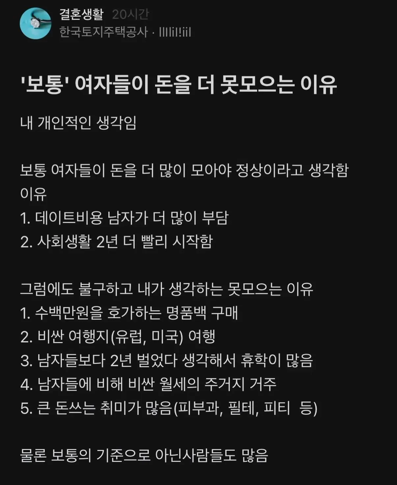

"보통" 여자들이 돈을 더 못모으는 이유
댓글
3,4는 그런경향이 있는데 나머지는… 열심히 모으는 애들은 악착같이 모으던데
그 비율이 남자보다 압도적으로 적다는거지
뭐 남자들이라고 다 돈 잘 모으고
여자들이라고 다 못 모으겠어? 본문이 그런 주장이 아니잖아
너같은 애들 방지하려고
제목이랑 막줄이 있는건데..
저런애들은 아무리 그런말 써놔도 '엥 아닌데? 이부진 사장 여자인데 돈 많이벌던데' 이럼
하시발제발좀
그만좀해 좆병신새끼야
뭐....마인드 차이지
남자는 3천만 있어도 오케이인 경우가 없다시피하니 존나 아끼고 모으는거고
여자는 3천만 있어도 오케이인 경우가 많으니 안 모으는 사람도 있는거고....
거기다 남자는 평생 모아야함 결혼을 하거나안하거나 근데 여자는 취집루트가있음
여초 중소 회사 다녔었는데 유럽 갔다온 애들이 80% 이상이었음ㅋㅋ
남자들은? 얼마나 여행갔어?
남직원이 별로 없어서 통계가 될진 모르겠지만
나 포함 한명도 안다녀 옴
왜 안가냐고 물어보면 “돈 아까움” 이거 밖에 없드라
남자는 뭔가 만들거나 체험하는거 좋아하니깐 아깝게 느끼고
여자는 대체적으로 장소나 분위를 좋아하니깐 덜 아깝게 느끼는거구.
외국 안나가도 여자들이 이쁜 장소 분위기 찾는거고 남자는 여자 때문에 가지 본인 의자로 잘 안가잖슴.
남자도 유럽가고 싶은 마음은 똑같은데, 이건 뭔 똥같은 소리임? 진짜 돈 아까우니까 못 가는거지
고양이도 키우고 여행도 존나가고 술자리 존나많음ㅋㅋ
걍 돈을 모아야한다는 상식 자체가 없는 경우가 많음
가치관이 다름.
많은 여자들은 경험에 많은 가치를 부여하지만
많은 남자들은 실재에 많은 가치를 부여하는 것 같음.
대다수의 남자의 취미는 피방이거나 운동이라 그리크게안나가는데
여자는옷피부 머리화장 미용에 ㅈㄴ투자함
뭐하나쓰는거에 망설임이없음
사바사임. 근데 여자들은 좀좀따리 말랑이볼 뭔 쓰잘데기 없능거 짧게 툭툭 쓰는데 누적되면 그 금액이 큰 편이고
남자들들 원기옥 모아서 전자제품이나 장비 등 한 방에 크게 씀.
저렇게 쏟아부어서 상향혼 성공하는게 고점이 더 높아서 그럼
지들이 좋아서 돈 쓴다는 건 이해하겠는데
꼭 병신년들이 성별에 따른 임금 차별 때문이다, 기업들의 핑크 택스 때문이다, 사회적 구조가 여성들을 가난하게 만든다 ㅇㅈㄹ 하는 게 병신 같음
결혼식이 왜 화려해지고 거품많이끼게됐는지 생각해보면 답나오지 ㅋㅋ
신랑 신부중 누군가가 그걸 원하기에
그리고 여자는 비정규직 비율이 더많음
하루죙일 쇼핑해서 그래 걔네들 죙일 폰 쳐다보는거 8할은 쇼핑임
걍 본인들 주변에 그런 여자만 있거나 온라인으로만 여자 접해서 그러는거지 돈 잘모음ㅋㅋㅋ 뭐 10억씩 모아놓고 욕하는건가?ㅋㅋ
내 "주변"은 전부 다 결혼하고 자식있는데
우리나라 인구감소걱정 절대안해도될듯?
내 "주변"은 전부 다 결혼했고
인구 감소로 인한 각종 문제들
대한민국에서는 일절없다
내주변은 전부 연봉 2억이라 틀린글인듯 ㅎ
나도 10억은 모았고
꾸밈비 몰라? 창녀도 아니지만 아무튼 비용 처리해줘야 됨
여자들 자산형성이 결혼시장에서 크리티컬하게 작용하지 않으니까 저축에 큰의미가 없는거지
피부과 필테 같은 미용에 비용을 지불하는것도 1억모은 조빻은련보다 3천만원모은 불여시가 잘팔리니까 그렇지
그냥 당연하다 생각함 그냥 저래도 되니깐 저러는거임
존나 정확하네 ㅋㅋ
요즘은 유럽여행 경력 없으면 좋게봐도 되겠다 싶을정도
해외에 꿀발라놨는지
여행이며 워홀이며 깜냥이 안되면서 경력을 해외에서 쌓으려고하는 사람도 있고
외국에 돈꼴아박는짓을 존나함
허영심 사치 말고는 다른 이유가 없지
집안 사정 때문에 돈이 없는 건 남녀 나눌 게 아닌거고
여초회사 다닌적 있었는데 30 이상 여자들일수록 4,5가 많았음
그리고 회사근처 자취하면서 굳이 차 갖고있는 여직원도 있었고
3번 4번이 찐임
남자들이야 썩어가는 구축원룸같은데서도 대충 살지만
여자들은 일단 공동현관 비번도 있고 어느정도 관리가 되는 곳에 살아야 하는게 맞음.. 부모도 그렇고 주변에서도 다 걱정함
우리와이프는 대학교 졸업전에 대기업취업하고 악착같이 1억 모은담에 통장에 넣고 그담부턴 버는거 그대로 다 썼다더라 여행도 가고 가방도 사고
남자도 욜로하자 걍
각종 관리시술비용 저게 진짜임...
나머진 맞고 1,3번은 개소리
성형,피부과,필테에 수천 발라서 외모 상위 10퍼 여자가 3천만원 가져옴 vs 평범녀가 1억 모아옴
전자가 결혼시장에서 훨씬 인기 많음 당연한 투자임
근데 안예쁜데 돈 없는 건 죄가 맞음
씨발 여기 주갤이노
5번은 취미가 아니지않음? 취민가 저거도ㅋㅋ
보통 남자들의경우 헬스끊어도 pt안받고 유튜브 보면서 루틴따라하거나
반지하 보증금 500 월세 35 같은 방에서 사는사람도 많고
해외여행을 잘 안가긴함
그리고 돈모아서 차를 삼
피부과는 돈 많이 쓰더라. 30~40만원 하는 거 숭텅숭텅 씀
4번은 소득에 비해 너무 과하게 비싼 거주지가 아닌 이상 이해가 됨, 저렴한 동네는 그만큼 미친새끼들이 꼬이더라
3번 좀 봤음ㅋㅋ
일하거나 놀러가는 애들도 있지만 뭔가에 도전해보려고
휴학하더라 그래도 어차피 남자보다 이득이니까..
4는 솔직히 어쩔수 없음
관리 시작한 남자들은 알겠지만 통상적인 피부 및 미용 관리 시작하면 달에 10~30씩 더 깨짐 ㅠ 외모관리는 돈드는게 맞더라 여행 빼면 이쪽에 돈 더 깨지는듯 엇사는것도 생각보다 많이 깨지고 여자 외모보면 돈 못모았다고 못 까겠더라~
여자친구 여행 진짜 ㅈㄴ감.ㅋㅋㅋ 남겨놓은 연차 하나도 없고 ㅋㅋㅋ
그러면서 대는 돈못모으는 핑계 : 여자생필품, 화장품, 계절별로 옷구매 어쩌구